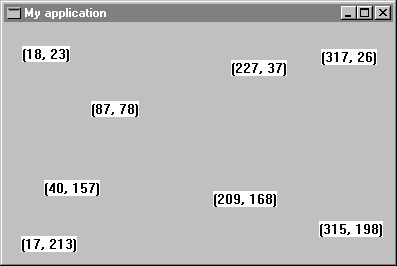

Step 3: Drawing text in a window
In the next sections, you will learn how to draw lines in the window, change the thickness of the lines, and finally save the contents of the window into a file for reloading later on. But first and to make things simple, you will learn to draw text in a window.
To provide applications with graphic functionality, Windows has a set of functions called the Graphic Device Interface, or GDI. The GDI is the graphic engine that Windows applications use to display and manipulate graphics. To draw text, lines, or figures in a window, you need to use a device context given by the GDI. A device context is a virtual surface with associated attributes, such as a pen, brush, font, background color, text color and current position. When you call GDI functions to draw on a device context, the device driver associated with that device context translates that drawing action into appropriate commands. These commands reproduce the drawing action as accurately as possible on the device context, regardless of the display's capabilities. The display might be a low-resolution monochrome screen, a two-million color screen or a printer. In other words, all devices supported by Windows.
To make things more interesting in your program, instead of bringing up a message box, you will respond by drawing text that shows the coordinates of the point where you clicked on the window. The new version of on_left_button_down will be defined as follows:
on_left_button_down (keys, x_pos, y_pos: INTEGER) is
-- Write x_pos and y_pos when the user presses
-- the left mouse button.
local
position: STRING
do
position := "("
position.append_integer (x_pos)
position.append (", ")
position.append_integer (y_pos)
position.extend (')')
dc.get
dc.text_out (x_pos, y_pos, position)
dc.release
end
You also need to add a new attribute in class MAIN_WINDOW which is:
dc: WEL_CLIENT_DC -- Device context associated to the current -- client window
The make routine needs to be modified in order to create dc as follows:
make is
-- Make the main window.
do
make_top ("My application")
!! dc.make (Current)
end
Figure 4 shows the result after several clicks.
Figure 4

One more function you can add to the application is clearing the window. The window will be cleared when a right mouse button is clicked. To implement this, redefine on_right_button to call invalidate which causes the whole window to be repainted. Since your window does not yet know how to repaint itself, it just clears its client area.
on_right_button_down (keys, x_pos, y_pos: INTEGER) is -- Invalidate window. do invalidate end
The full code of MAIN_WINDOW is:
class
MAIN_WINDOW
inherit
WEL_FRAME_WINDOW
redefine
on_left_button_down, on_right_button_down, closeable
end
creation
make
feature {NONE} -- Initialization
make is
-- Make the main window.
do
make_top ("My application")
!! dc.make (Current)
end
feature -- Access
dc: WEL_CLIENT_DC
-- Device context associated to the current
-- client window
feature {NONE} -- Implementation
on_left_button_down (keys, x_pos, y_pos: INTEGER) is
-- Write x_pos and y_pos when the user presses
-- the left mouse button.
local
position: STRING
do
position := "("
position.append_integer (x_pos)
position.append (", ")
position.append_integer (y_pos)
position.extend (')')
dc.get
dc.text_out (x_pos, y_pos, position)
dc.release
end
on_right_button_down (keys, x_pos, y_pos: INTEGER) is
-- Invalidate window.
do
invalidate
end
closeable: BOOLEAN is
-- Does the user want to quit?
local
msgBox: WEL_MSG_BOX
do
!! msgBox.make
msgBox.question_message_box (Current, "Do you want to quit?", "Quit")
Result := msgBox.message_box_result = Mb_ok
end
end -- class MAIN_WINDOW